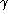
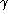

Consider the following estimation problem
where x is unknown to be estimated, y is known, w is a unit-variance zero-mean Gaussian vector, and
where Co denotes the convex hull and H(i) and V(i), i=1,...,N, are given matrices.
The objective is to find L such that the estimate
is unbiased and the worst case estimation error variance is minimized.
It can be shown that this problem can be formulated as a  problem as follows: minimize  subject to
problem as follows: minimize  subject to
and
To use lmitool for this problem, we invoke it as follows:
--> lmitool()This results is an interactive session which is partly illustrated in following figures.
Figure 1: This window must be edited to define problem name and the
name of variables used.
Figure 2: For the example at hand the result of the editing should
look something like this.
Figure 3: This is the skeleton of the solver function and the
evaluation function generated by LMITOOL using the names
defined previously.
Figure 5: A file is proposed in which the solver and evaluation
functions are to be saved. You can modify it if you want.
Figure 4: After editing, we obtain.